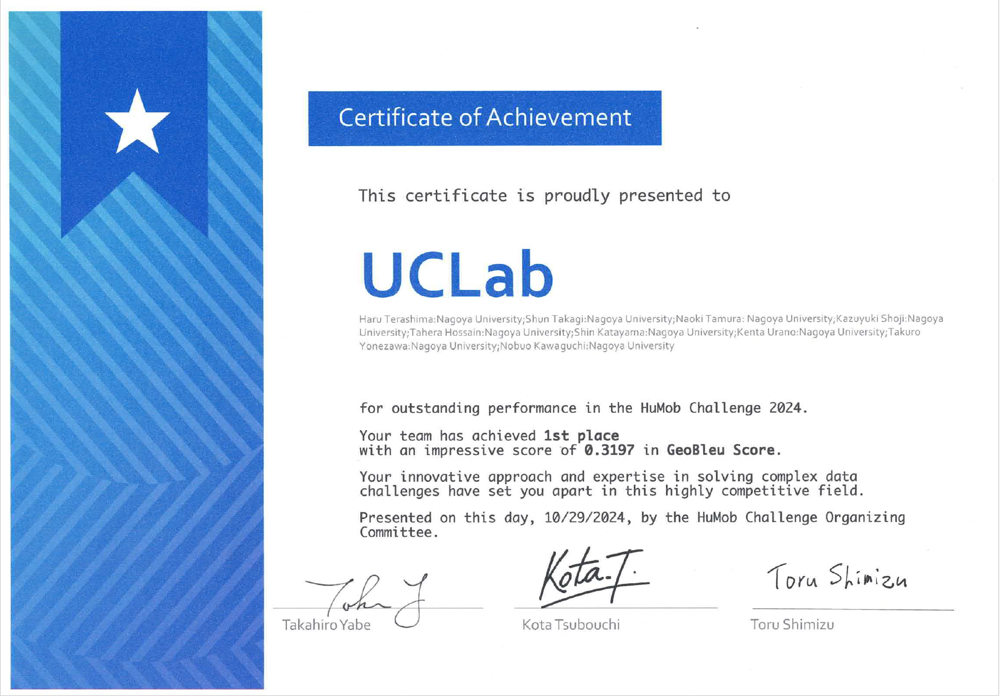
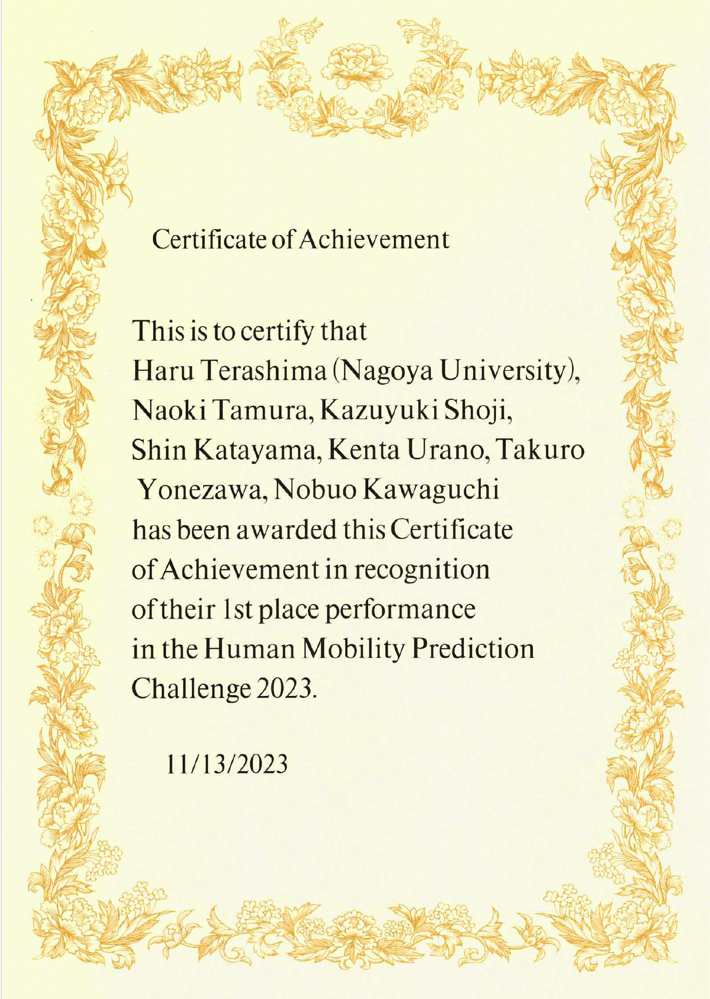
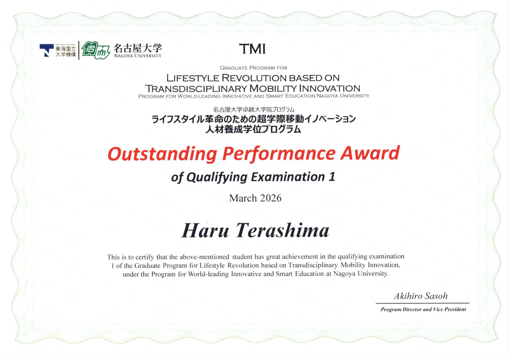

About Me
Hello, I'm Haru Terashima (寺島青), a Ph.D. student (D1) at the Graduate School of Engineering, Nagoya University, Japan. I am a member of Kawaguchi Laboratory (UCLab), supervised by Prof. Nobuo Kawaguchi and Prof. Takuro Yonezawa. I received my B.E. from Nagoya University in 2024 and my M.E. in 2026. My research interests include Urban Computing (Urban Location Modeling, Human Behavior Modeling, Human Mobility Prediction) and Machine Learning. My hobbies are playing darts, solving mysteries, running, and traveling.
はじめまして、寺島青（てらしま はる）です。名古屋大学大学院工学研究科 博士課程（D1）に在籍しており、河口信夫教授・米澤拓郎准教授のご指導のもと、河口研究室（UCLab）で研究を行っています。2024年に名古屋大学工学部を卒業（学士）、2026年に同大学院を修了（修士）しました。研究分野はアーバンコンピューティング（都市空間モデリング・移動モデリング・人流予測）および機械学習です。趣味はダーツ・謎解き・ランニング・旅行です。
Biography
Education
- Department of Information and Communication Engineering (Ph.D. Student)
Graduate School of Engineering, Nagoya University2026.04 – - Department of Information and Communication Engineering (Master of Engineering)
Graduate School of Engineering, Nagoya University2024.04 – 2026.03 - Department of Electrical, Electronics, and Information Engineering (Bachelor of Engineering)
School of Engineering, Nagoya University2020.04 – 2024.03 - Aichi Prefectual Meiwa High School2017.04 – 2020.03
Experience
- Graduate Program for Lifestyle Revolution based on Transdisciplinary Mobility Innovation (TMI WISE Program)
Institutes of Innovation for Future Society, Nagoya University2024.05 – 2029.03
Fellowships
- JST BOOST: TokAI BOOST 東海国立大学機構 名古屋大学 次世代AI人材育成事業 (JST / Nagoya University)2026.04 – 2029.03
- WISE Program: ライフスタイル革命のための超学際移動イノベーション人材養成学位プログラム (TMI) (MEXT / Nagoya University)2024.05 – 2029.03
Activities
- ConferenceACM SIGSPATIAL, Minneapolis, MN, USA2025.11
- ConferenceInternational Symposium on Spatial and Temporal Data (SSTD) 2025, Osaka, Japan2025.08
- EventEDBT Summer School on AI & Data Management, Cyprus2025.07
- EventSmart City Expo World Congress, Barcelona, Spain2024.11
- ConferenceACM SIGSPATIAL, Atlanta, GA, USA2024.10
- ConferenceACM MobiSys (ASSET), Tokyo, Japan2024.06
- ConferenceACM SIGSPATIAL, Hamburg, Germany2023.11
Services
- ReviewerUbiComp/ISWC 2026 International Workshop on Reality Mediation
- ReviewerACM SIGSPATIAL 2026 Research Track
Highlights

3rd prize @ACM SIGSPATIAL

1st prize @ACM SIGSPATIAL

1st prize @ACM SIGSPATIAL

QE1 Outstanding Performance Award
Publications
Journal
CLIFT: Cross-City Mobility-Derived Lifestyle Pattern Transfer for Improved Multi-City Next Location Prediction
ACM Transactions on Spatial Algorithms and Systems, 2026 · Paper
Additive Compositionality in Urban Area Embeddings Based on Human Mobility Patterns
ACM Transactions on Spatial Algorithms and Systems, 2026 · Paper
NSP-BERT：滞在履歴の長期的依存関係を考慮した効率的な滞在予測手法
情報処理学会論文誌 若手研究者, 2026 · Paper
Life Pattern-Based Human Attribute Estimation Using Only GPS Data
IEEE Access, 2025 · Paper
International Conference
Towards Circular Accumulation of Latent Local Knowledge via Automated Interview System: A Preliminary Study
IEEE International Conference on Computers, Software, and Applications (COMPSAC) Student Research Symposium, 2026 · Paper
Discovering Emerging Urban Hotspots Using Satellite Imagery and Human Mobility Data
27th International Conference on Human-Computer Interaction, 2025 · Paper
Additive Compositionality in Urban Area Embeddings Based on Human Mobility Patterns
32nd ACM International Conference on Advances in Geographic Information Systems, 2024 · Paper
Unveiling Human Attributes through Life Pattern Clustering using GPS Data Only
32nd ACM International Conference on Advances in Geographic Information Systems, 2024 · Paper
Domestic Conference
LocationBind:地理空間座標を媒介とした異種都市モダリティデータの共通潜在表現学習
マルチメディア、分散、協調とモバイル(DICOMO)シンポジウム, 2026
住民属性と認知的対立理論を用いた生成AIインタビューによる潜在的な地域情報の収集
マルチメディア、分散、協調とモバイル(DICOMO)シンポジウム, 2026
大規模人流データに基づくユーザ固有の移動文脈を考慮した都市空間モデリング
第119回 IPSJ SIG-MBL研究会, 2026 · 奨励発表賞
モビリティとモティリティの視点からみた社会的孤立・孤独の発生メカニズム—地域住民調査データに基づく一次予防への示唆—
第119回 IPSJ SIG-MBL研究会, 2026
共通潜在空間を介した多様な都市エリアデータのクロスモーダル変換手法
第84回 IPSJ SIG-UBI研究会, 2024
時系列滞在頻度傾向と移動傾向を組み合わせた移動先予測手法
第84回 IPSJ SIG-UBI研究会, 2024 · 優秀論文賞
DiverCityMeter: 大規模移動データによる生活パターン分析を通じた都市空間の多様性算出手法
第112回 IPSJ SIG-MBL研究会, 2024 · 優秀論文賞
NSP-BERT: 滞在時間を考慮に入れた効率的なNext Stay予測手法
マルチメディア、分散、協調とモバイル(DICOMO)シンポジウム, 2024 · 優秀プレゼンテーション賞
BERTに基づく都市における移動エリア予測手法の提案
第111回 IPSJ SIG-MBL研究会, 2024 · 奨励発表賞
Awards
Research
- 奨励発表賞, 第119回 IPSJ SIG-MBL研究会, 2026.5
- 優秀賞, 名古屋大学TMI卓越大学院プログラムQE1, 2026.3
- 優秀賞, 名古屋大学工学研究科電気系修士中間発表, 2025.2
- 優秀論文賞, 第84回 IPSJ SIG-UBI研究会, 2024.11
- 優秀論文賞, 第112回 IPSJ SIG-MBL研究会, 2024.9
- 優秀プレゼンテーション賞, DICOMOシンポジウム, 2024.6
- 奨励発表賞, 第111回 IPSJ SIG-MBL研究会, 2024.5
Competition
- 3rd prize, ACM SIGSPATIAL GISCUP 2025 (Human Mobility Prediction Challenge 2025), 2025.11
- 1st prize, Human Mobility Prediction Challenge 2024, 2024.10
- 1st prize, Human Mobility Prediction Challenge 2023, 2023.11
- 第3位, Japan Automotive AI Challenge 2023 Integration, 2023.11
- 第2位, Japan Automotive AI Challenge 2023 For Rookie, 2023.8